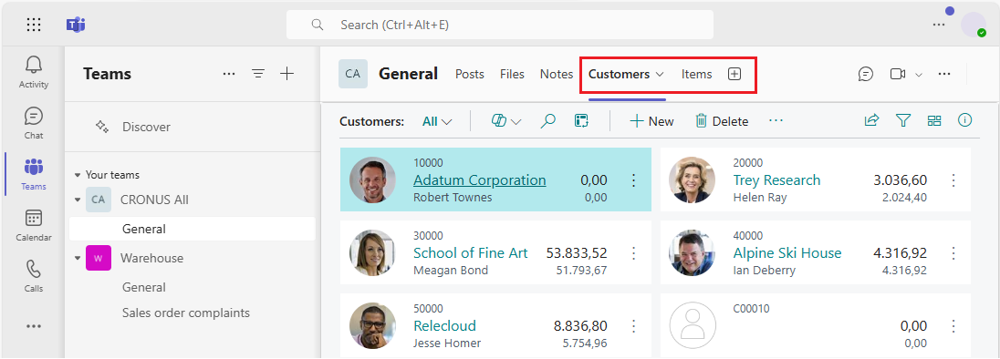

Integration von Business Central und Microsoft Teams
GILT FÜR: Business Central Online
Microsoft Teams ist ein Microsoft 365-Produkt, mit dem Sie Mitarbeiter verbinden und mit ihnen chatten und zusammenarbeiten können. Business Central bietet eine App, die Microsoft Teams mit Ihren Geschäftsdaten in Business Central verbindet. So können Sie schnell Daten zwischen Teammitgliedern austauschen, Kontakte finden und Anfragen schneller beantworten.
Die App ist im Teams-Marketplace verfügbar und kann mit der Teams-Web-, Desktop- oder mobilen App verwendet werden.
Funktionsübersicht
Die Business Central-App für Teams bietet die folgenden Funktionen.
Suchen Sie nach Details zu Debitoren, Kreditoren und anderen Kontakten
Unabhängig davon, wo Sie sich in Teams befinden, können Sie Details zu Debitoren, Kreditoren und anderen Business Central-Kontakten nachschlagen. Mit dieser Funktion können Sie nicht nur allgemeine Informationen zu Kontakten anzeigen, sondern auch auf den Interaktionsverlauf, verwandte Dokumente und mehr zugreifen.
{kind=link}
Sie können auch Kontaktdaten in einem Gespräch teilen. Von dort haben die Teilnehmer auch Zugriff auf noch mehr Details zum Kontakt.
{kind=link}
Weitere Informationen finden Sie unter Suchen nach Kontakten von Microsoft Teams.
Datensätze in Gesprächen teilen
Sie können einen Link zu einem beliebigen Business Central-Datensatz kopieren und ihn in eine Teams-Unterhaltung einfügen, um ihn mit Ihren Mitarbeitern zu teilen. Die App dann wird zu einem kompakten, interaktiven Link erweitert, auf dem Informationen zum Datensatz angezeigt werden.

Wenn Sie sich in der Unterhaltung befinden, können Sie und Ihre Mitarbeiter weitere Details zum Datensatz anzeigen, Daten bearbeiten und Maßnahmen ergreifen – ohne Teams zu verlassen.
Erfahren Sie mehr in Teilen Aufzeichnungen in Microsoft Teams.
Links von Seiten in Business Central für Teams freigeben
Direkt von den meisten Sammlungs- und Detailseiten in Business Central können Sie die Aktion Für Teams freigeben über das Symbol  Symbol, um eine Nachricht zu verfassen, Empfänger auszuwählen, z.B. Teammitglieder, Gruppen oder Kanäle, und die Nachricht mit einem Link und zur Seite Business Central zu senden.
Symbol, um eine Nachricht zu verfassen, Empfänger auszuwählen, z.B. Teammitglieder, Gruppen oder Kanäle, und die Nachricht mit einem Link und zur Seite Business Central zu senden.

Erfahren Sie mehr in Teilen-Datensätzen und Seitenlinks in Microsoft Teams.
Business Central-Registerkarte zu Teams-Kanal oder -Chat hinzufügen
Wenn die Business Central-App für Teams installiert ist, können Sie eine Registerkarte in einem Kanal oder Chat hinzufügen, die Business Central-Daten aus Listen und Kartenseiten anzeigt.

Weitere Informationen finden Sie unter Eine Registerkarte „Business Central“ in Teams hinzufügen.
Erste Schritte
Für die Business Central-App für Teams ist ein Business Central-Online-Benutzerkonto erforderlich.
Wenden Sie sich an den Administrator Ihres Unternehmens, wenn Sie nicht sicher sind, ob Sie ein Konto besitzen oder Ihre Anmeldeinformationen für die Anmeldung nicht kennen.
Tipp
Wenn Ihre Organisation kein Business Central-Abonnement hat, können Sie sich für eine kostenlose Testversion anmelden. Weitere Informationen finden Sie unter Registrieren Sie sich für eine kostenlose Dynamics 365 Business Central Testversion.
Administratorinformationen zur Einrichtung von Benutzern für die Arbeit mit Business Central und Teams finden Sie unter Verwalten der Microsoft Teams Integration in Business Central.
- Installieren Sie die Business Central-App in Teams. Siehe Die Business Central-App für Microsoft Teams installieren.
- Sobald die App installiert ist, können Sie loslegen. Weitere Informationen finden Sie unter Suchen nach Kunden, Lieferanten und anderen Kontakten aus Microsoft Teams und Teilen-Datensätzen in Microsoft Teams.
Ähnliche Informationen
Häufig gestellte Fragen zu Teams
Teams Problembehebung
Ändern der Firma und anderer Einstellungen in Teams
Entwickeln für Teams Integration
Starten Sie eine kostenlose Testversion!
Kostenlose E-Learning-Module für Business Central finden Sie hier